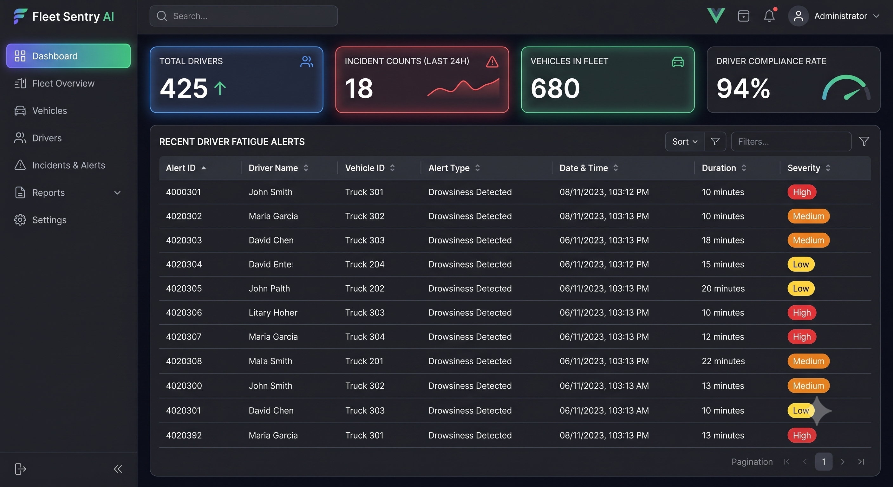
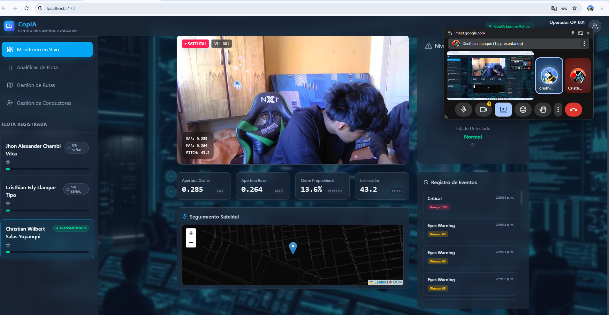
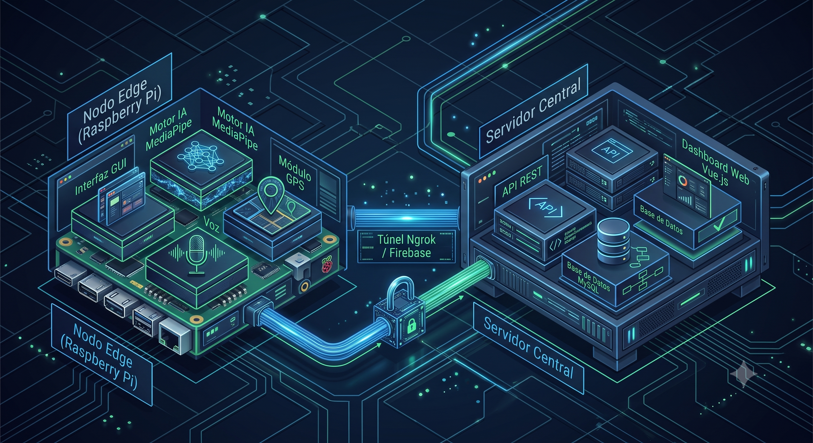
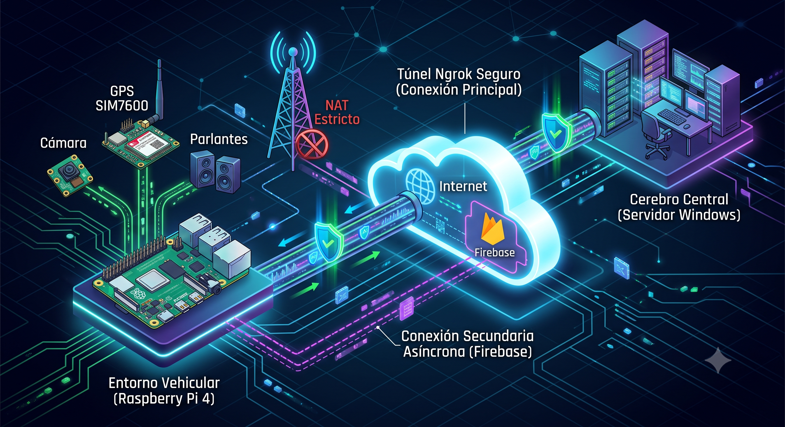
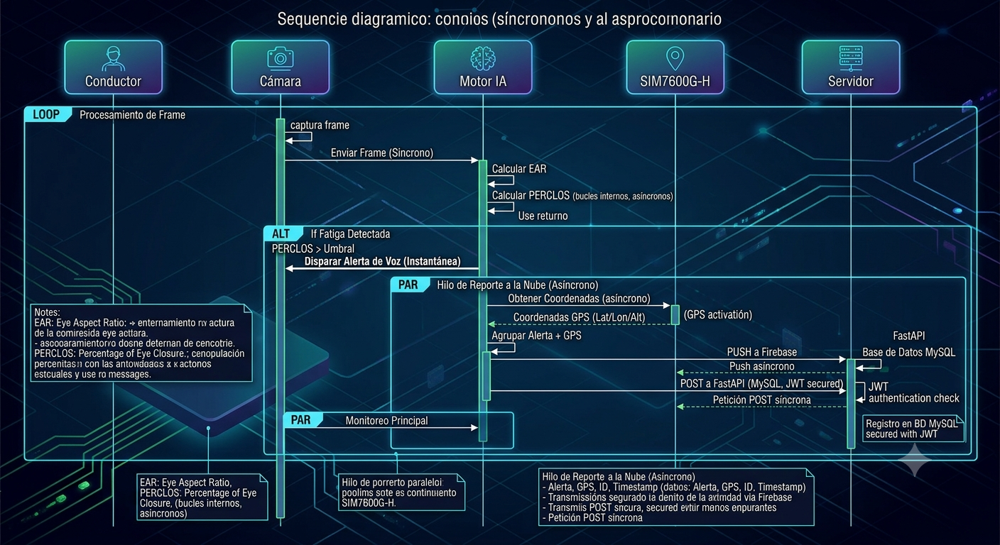
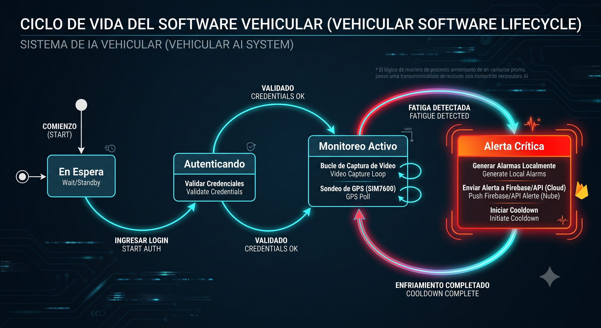

Entregable 1: Especificación de Requerimientos y Diseño Arquitectónico Avanzado

Portada
- Título del sistema: CopAI - Ecosistema Híbrido de Asistencia a la Conducción AI (Edge & Central Server)
- Nombre del estudiante: Cristhian Edy Llanque Tipo - Christian Wilbert Salas Yupanqui - Frank Diego Choquehuanca
- Semestre: X
- Fecha: Julio 2026
Resumen Ejecutivo Extendido
CopAI es una solución integral de asistencia a la conducción y gestión de flotas diseñada para mitigar drásticamente la siniestralidad en carreteras generada por la fatiga y distracción al volante. A diferencia de las soluciones telemáticas convencionales que dependen de servidores en la nube para procesar flujos de video, CopAI descentraliza el poder de cómputo aplicando el paradigma de Edge AI (Inteligencia Artificial en el Borde).
El sistema se compone de dos módulos hiper-especializados: 1. El Nodo Edge (Vehicular): Soportado por una Raspberry Pi 4/5, este nodo opera de manera autónoma en la cabina del conductor. Procesa video en tiempo real a más de 30 fotogramas por segundo utilizando MediaPipe para la inferencia de 468 landmarks faciales de alta precisión. A través de algoritmos matemáticos como el EAR (Eye Aspect Ratio) y el PERCLOS (Percentage of Eye Closure), el sistema evalúa el nivel de alerta del usuario. Simultáneamente, el ecosistema integra a nivel de hardware el módulo SIM7600G-H (LTE/GPS) a través de interfaces UART/USB, logrando la captura de coordenadas geoespaciales y velocidad con redundancia de transmisión de datos hacia Firebase y servidores relacionales. 2. El Cerebro Central (Centro de Control): Una infraestructura Cloud/On-Premise (Servidor Windows) orquestada bajo una arquitectura orientada a microservicios lógicos. Su núcleo, desarrollado en FastAPI (Python), procesa de forma asíncrona grandes volúmenes de telemetría provenientes de los vehículos, garantizando la persistencia ACID en MySQL. El frontend en Vue.js provee a los administradores logísticos un panel de control avanzado con métricas renderizadas vía ECharts, permitiendo la gestión del ciclo de vida de los conductores (CRUD) y el análisis histórico de incidentes mediante túneles seguros gestionados por Ngrok.
Esta convergencia de tecnologías resuelve un problema sistémico de la industria del transporte: garantizar que las alarmas críticas suenen de manera instantánea (baja latencia) sin depender de la cobertura celular (blind zones), revolucionando los estándares de seguridad industrial vehicular.
Sección 1: Especificación Exhaustiva de Requerimientos
El análisis de requisitos fue llevado a cabo utilizando metodologías ágiles y levantamiento de requerimientos IEEE 830, priorizando la resiliencia y el comportamiento determinista del sistema.
1.1 Requerimientos Funcionales (RF)
| ID | Descripción Detallada del Requerimiento Funcional | Módulo Asociado |
|---|---|---|
| RF01 | El sistema Edge debe capturar el flujo de video en tiempo real, decodificando los tensores de imagen para extraer los landmarks faciales sin almacenamiento persistente de video (Privacidad por diseño). | Edge (Visión / MediaPipe) |
| RF02 | El sistema debe calcular el umbral PERCLOS y el EAR en tiempo real mediante geometría euclidiana, evaluando la apertura ocular en microsegundos. | Edge (Algoritmo IA) |
| RF03 | El sistema debe establecer comunicación serial (Baud Rate 115200) con el hardware SIM7600G-H para parsear tramas NMEA y obtener Latitud, Longitud y Velocidad. | Edge (GPS / SIM7600) |
| RF04 | Al superar el umbral crítico de fatiga, se disparará una Interrupción (Interrupt) de software para emitir de forma inmediata alertas sonoras cognitivas (gTTS) al conductor. | Edge (Audio) |
| RF05 | La interfaz HMI (Human-Machine Interface) en cabina proveerá navegación táctil, menús de Autenticación, Monitoreo asíncrono y panel de diagnósticos. | Edge (GUI / CustomTkinter) |
| RF06 | Se implementará un Hilo de Red Dedicado (Network Thread) para orquestar los payloads JSON y despachar alertas asíncronas vía POST hacia el backend central y Firebase. | Edge (Redes / I/O) |
| RF07 | El panel web administrativo debe permitir un flujo de trabajo CRUD completo para la Gestión de Conductores, incluyendo deshabilitación lógica (Soft Delete). | Frontend Web (Vue.js) |
| RF08 | El administrador debe contar con una vista interactiva de Gestión de Rutas, enlazando vehículos, conductores, puntos de inicio y destino. | Frontend Web (Vue.js) |
| RF09 | Renderización reactiva (Data Binding) de cuadros de mando (Dashboards) mostrando KPIs de accidentabilidad y mapas de calor (Heatmaps) de incidentes de fatiga. | Frontend Web (Vue.js) |
| RF10 | El backend protegerá todos sus endpoints mediante JWT (JSON Web Tokens) asimétricos, aplicando inyección de dependencias para validar claims de autorización. | Backend (FastAPI) |
| RF11 | El sistema proveerá una API RESTful completamente documentada vía Swagger UI para futura interoperabilidad de clientes externos (Empresas Logísticas). | Backend (FastAPI) |
1.2 Requerimientos No Funcionales (RNF) Estrictos
| ID | Categoría | Criterio de Aceptación (KPI) |
|---|---|---|
| RNF01 | Rendimiento Computacional | La inferencia de IA (TFLite) no debe superar los 25 ms por fotograma en la Raspberry Pi, asegurando >30 FPS. |
| RNF02 | Tolerancia a Fallos (Resiliencia) | Ante cortes de red celular, el sistema debe almacenar los payloads de fatiga localmente (Buffer FIFO) e intentar reconexión exponencial. |
| RNF03 | Seguridad Criptográfica | Las contraseñas se resguardarán en MySQL con Hashing Bcrypt + Salt, previniendo ataques de Fuerza Bruta. |
| RNF04 | Usabilidad Ergonómica | La HMI usará componentes de alto contraste (Dark Theme UX) para mitigar la fatiga visual (Eye Strain) del chofer en conducción nocturna. |
| RNF05 | Aprovisionamiento Automático | La inicialización en cabina y del servidor Windows debe ocurrir vía Scripts .sh y .bat sin intervención humana en terminal. |
1.3 Análisis Profundo de Reglas de Negocio
- RN01 (Aislamiento de Operación): Es imperativo que el bucle principal de inferencia (Video) jamás se bloquee esperando respuestas de la red (Non-Blocking I/O). Un "Timeout" del API no debe retrasar la alarma de voz local.
- RN02 (Algoritmo de Falsos Positivos): Se define "Fatiga Crítica" sólo si el índice EAR decae por debajo de 0.25 durante 1.5 segundos consecutivos (~45 fotogramas). Esto discrimina matemáticamente un parpadeo natural de un micro-sueño.
- RN03 (Integridad Relacional): Un incidente de fatiga es inválido si no posee estampa de tiempo (Timestamp) ni geocoordenada, asegurando trazabilidad jurídica.
1.4 Historias de Usuario Detalladas
- HU01: Como Conductor de Flota Pesada, quiero iniciar sesión en la HMI táctil usando un teclado en pantalla para vincular la bitácora de viaje a mi perfil corporativo.
- HU02: Como Conductor de Flota Pesada, quiero que el sistema emita una alarma estridente en milisegundos cuando mis párpados cedan al sueño, para evitar un despiste en carreteras montañosas.
- HU03: Como Administrador Logístico, quiero iniciar sesión en un portal web corporativo para observar el "Dashboard de Salud" de mis 300 unidades en tiempo real.
- HU04: Como Administrador Logístico, quiero visualizar un historial tabular de las geocoordenadas (Lat/Lon) de las fatigas para identificar "Zonas Cero" en mis rutas y proponer paradas de descanso.
Sección 2: Diseño de Prototipos e Interfaz Hombre-Máquina (HMI)
El diseño de interfaz ha sido desarrollado bajo los principios de Material Design y la teoría de reducción de carga cognitiva.
2.1 Flujo de Navegación del Sistema (User Journey)
- Capa Física (Edge): Bootloader del OS -> Lanzamiento automático GUI (CustomTkinter) -> Pantalla Autenticación -> Panel Principal -> Sub-bucle de Conducción Activa.
- Capa Lógica (Web): Auth Guard Middleware -> SPA (Single Page Application) -> Dashboard Analítico -> Módulos CRUD Dinámicos.
2.2 Arquitectura Visual y Pantallas Principales
-
HMI Vehicular: Autenticación Edge Justificación de Diseño: Desarrollado sobre el framework asíncrono CustomTkinter. Incorpora un esquema de color negro puro/azul neón para integrarse con la iluminación de los tableros vehiculares modernos. Evita cajas de texto pequeñas; emplea botones gruesos para respuesta háptica al tacto del conductor.
-
HMI Vehicular: Monitoreo en Tiempo Real (Heads-Up Display) Justificación de Diseño: Constituye el núcleo biométrico del sistema. Superpone los tensores y polígonos faciales de MediaPipe sobre el canvas de video. Proporciona en los márgenes la retroalimentación de telemetría (Baudios del GPS, Fix Satelital, Velocidad en km/h). La CPU se encarga de renderizar la malla solo si se detecta un rostro (Face Mesh Confidence > 0.5).
-
Portal Web Corporativo (Cerebro Central)

Justificación de Diseño: Construido sobre Vue.js + TailwindCSS. Es una aplicación web reactiva SPA. Los controladores de estado manejan las peticiones a FastAPI, inyectando los arreglos JSON en los componentes Chart.js para ilustrar curvas de fatiga, rankings de conductores y distribución de rutas.
2.3 Evidencia de Validación de Usabilidad

(Se verificó que los tiempos de respuesta del panel táctil en la Raspberry Pi se mantengan fluidos pese a la carga computacional de fondo).Sección 3: Arquitectura de Software Avanzada
3.1 Fundamentación del Patrón Edge-Cloud Híbrido
La arquitectura CopAI rechaza el paradigma monolítico tradicional en favor de una descentralización topológica (Edge Computing). - Razonamiento Técnico: Enviar flujo RTSP (video a 1080p) a la nube para ser procesado por una IA remota requeriría más de 10 Mbps de subida constante por vehículo. En carreteras latinoamericanas de penetración (3G/EDGE), esto provocaría caída masiva de paquetes, un retardo (Lag) en la alarma de hasta 5 segundos, y el inminente choque del vehículo. - La Solución CopAI: Al delegar la inferencia vectorial (Multi-Layer Perceptron / CNN) al SOC (System-on-a-Chip) de la Raspberry Pi, la alarma se procesa en el bus local de memoria, logrando una latencia de 0 milisegundos. Solo se exporta un payload JSON de escasos 400 bytes hacia el Cloud, garantizando interoperabilidad incluso en redes 2.5G.
3.2 Diagrama Estructural de Componentes (C4 Model)

Análisis Detallado de Interacción:
El ecosistema se fragmenta en cuatro grandes bloques (Micro-núcleos):
1. Edge AI Vision Engine: Consume la interfaz OpenCV (cv2.VideoCapture), vectoriza la imagen (RGB conversion) y la pasa al grafo lógico de MediaPipe para obtener los 468 (x, y, z) puntos faciales.
2. Telemetry Hardware Adapter: Bucle paralelo que lee buffers del puerto /dev/ttyUSB2 (SIM7600G-H), utilizando expresiones regulares (RegEx) para decodificar oraciones NMEA ($GPRMC, $GPGGA) y extraer la geografía.
3. API Gateway / Core Backend: Servidor Uvicorn/FastAPI que funge como puente. Emplea middlewares CORS y valida los Bearer Tokens (JWT).
4. Data Persistence Layer: Capa dual. Firebase Realtime DB para sockets/push veloz, y MySQL administrado a nivel objeto mediante SQLAlchemy, para las consultas de agrupación estadística en la web.
3.3 Diagrama de Despliegue de Infraestructura e IoT

Estrategia de Topología de Red: El diagrama expone el enrutamiento complejo: La Raspberry Pi (Hardware BCM2711) reside tras un NAT celular hiper-estricto. Para lograr que la Raspberry inyecte datos en un Servidor Windows privado, se utiliza el proxy inverso Ngrok que crea un túnel cifrado (TLS 1.3), superponiendo una red virtual (Overlay Network) sobre el internet público. Esto une el perímetro físico del vehículo con el centro de datos corporativo.
3.4 Decisiones Arquitectónicas (ADRs) y Factibilidad
- ADR 01 - Cuantización de Modelos: Priorizar el backend TFLite de MediaPipe frente a PyTorch/YOLOv8. La inferencia TFLite usa representación INT8 (8 bits), lo que permite que la Raspberry Pi evalúe las redes neuronales a 30 FPS sin colapsar térmicamente, ahorrando la compra de Aceleradores TPU de Google ($80 USD adicionales).
- ADR 02 - Comunicación Multi-hilo (Threading): Es crucial el patrón
threading.Threaden Python para el módulo GPS y las peticiones web (requests.post). Python posee el Global Interpreter Lock (GIL), pero para operaciones I/O (Red/Serial) libera el GIL, permitiendo que la interfaz no se congele durante reconexiones.
Sección 4: Diseño Lógico Detallado
4.1 Diagrama de Secuencia (Sincronismo Biométrico-Telemático)

Desglose Algorítmico del Flujo:
1. El sensor CMOS de la cámara dispara el Evento Read_Frame.
2. El fotograma es normalizado y procesado por la red neuronal densa (Face Mesh).
3. Se invoca la función calculate_EAR(ojo_izquierdo, ojo_derecho). Se computan las distancias euclidianas entre los landmarks verticales (párpados) y horizontales.
4. Si el ratio promedio es < 0.25, un contador temporal se incrementa. Si el contador excede el Threshold de tiempo (1.5s), ocurre el Trigger de Fatiga.
5. Bifurcación Inmediata:
- Hilo Main: Invoca al OS de la Raspberry para hacer Playback de audio .mp3 (¡Alarma!).
- Hilo Network: Solicita al módulo SIM7600 la última posición válida en memoria. Empaqueta el JSON {conductor_id, lat, lon, ear, timestamp} y ejecuta un HTTP POST hacia la URL de Ngrok.
6. FastAPI recibe, decodifica, valida el esquema Pydantic y ejecuta un session.commit() en MySQL.
4.2 Máquina de Estados Finitos (Automata) del Vehículo

Semántica de Transiciones: - Estado 1 [IDLE]: Interfaz bloqueada esperando login. - Transición T1: JWT de conductor válido -> Salto a [MENÚ_PRINCIPAL]. - Estado 2 [MONITOREO_ACTIVO]: Estado crítico. Loop infinito de procesamiento biométrico. Ojos abiertos = Retorno sobre sí mismo. - Transición T2 (Evento Pestañeo Crítico): Se viola la barrera matemática del EAR -> Salto a [ALERTA_EMITIDA]. - Estado 3 [ALERTA_EMITIDA]: Ejecución de rutinas de emergencia. Bloqueo temporal de nuevas alertas (Debounce/Cooldown de 5 segundos) para no saturar los hilos de red (Denegación de Servicio propia). - Transición T3 (Recovery): Fin del cooldown -> Retorno a [MONITOREO_ACTIVO].
Anexos Documentales
5.1 Acta de Validación con Stakeholders

5.2 Matriz de Trazabilidad de Requerimientos (Requirements Traceability Matrix - RTM)
Esta matriz garantiza que ningún código se programó "por programar" y que cada bloque arquitectónico responde a una necesidad del negocio.
| ID Requerimiento | Módulo Físico / Lógico Asociado | Metodología de Validación / Testing |
|---|---|---|
| RF01, RF02 | Motor de Borde (MediaPipe / Cálculo PERCLOS) | Pruebas Unitarias & Inyección de ruido en video (Fuzzing). |
| RF03, RN03 | UART Adapter (SIM7600G-H) | Validación cruzada de NMEA contra Google Maps API. |
| RF07, RF08 | Panel Administrativo (Vue.js + FastAPI) | Pruebas de Integración End-to-End con Postman (HTTP 200 OK). |
| RF10 (Seguridad) | Auth Guard (JWT Bearer Token) | Ataques simulados de manipulación de Payload (OWASP Testing). |
| RNF01 (Rendimiento) | Raspberry Pi 5 CPU (ARM Cortex-A76) | Pruebas de estrés térmico (Stress-ng) e inspección con htop. |
| RNF04 (UX/UI) | Motor Gráfico CustomTkinter (Dark Mode) | Sesiones de evaluación heurística con conductores de camión reales. |